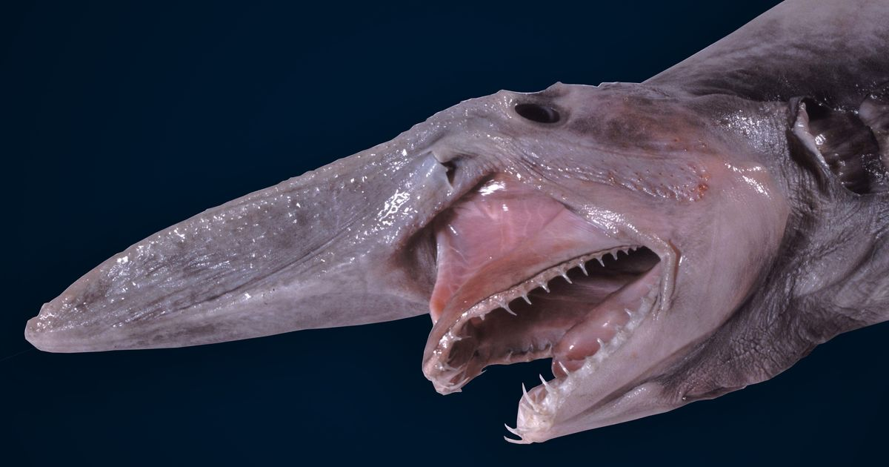
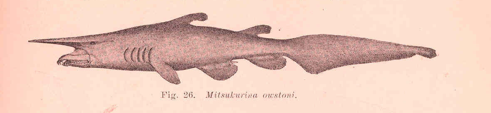

WHAT ARE GOBLIN SHARKS?
The goblin shark (Mitsukurina owstoni) is one of the creepier fish out there! It has a long, prominent snout covered with special sensing organs (ampullae of Lorenzini) that help it to sense electric fields in the deep, dark water it calls home. It also has unusual coloration, ranging from pinkish to purplish grey, with bright blue around the edges of its fins. But even stranger is its jaw. Though close to the head in this picture, it can be extended to the length of its snout to help the goblin shark ambush fish, squids and crustaceans.
Sometimes called a "living fossil", it is the only extant representative of the family Mitsukurinidae, a lineage some 125 million years old. It is usually between 3 and 4 m (10 and 13 ft) long when mature, though it can grow considerably larger such as one captured in 2000 that is thought to have measured 20 ft. Goblin sharks are benthopelagic creatures that inhabit upper continental slopes, submarine canyons, and seamounts throughout the world at depths greater than 100 m (330 ft), with adults found deeper than juveniles. Some researchers believe that these sharks could also dive to depths of up to 1300 m for short periods of time.